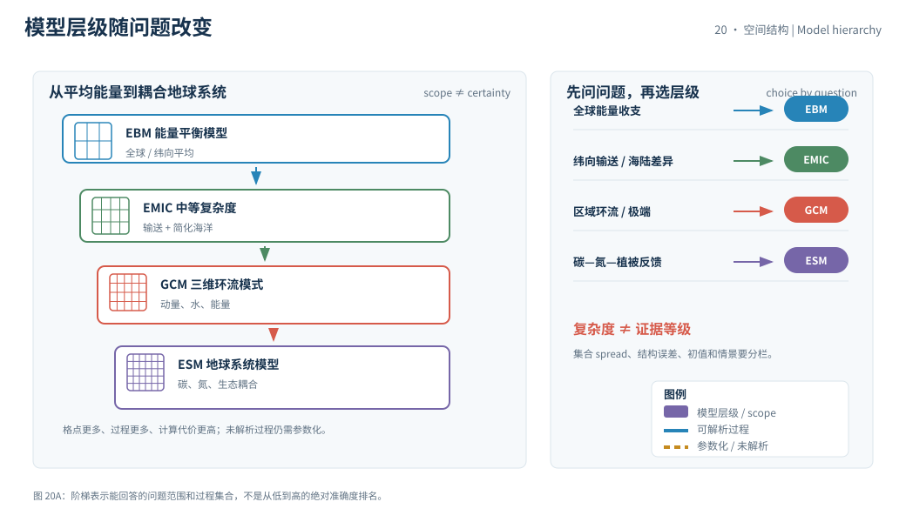
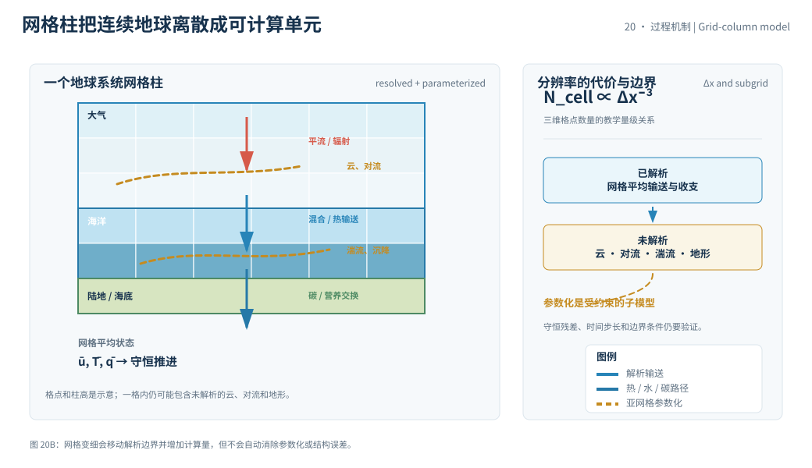

本页目录
20 · 从能量平衡到地球系统模型
气候模型不是一根“预测未来的曲线”，而是把守恒方程、边界条件、参数化方案和计算网格组合起来的可运行实验。模型层级越高，能表示的过程越多，也带来更多参数与计算约束。本页用模型梯子区分能量平衡模型、全球环流模型和地球系统模型。
资料核验日期：2026-09-01。实验中的分辨率、计算代价和不确定度是尺度化教学指标，不是某个模式中心或 CMIP 版本的性能声明；若引用模式结果，须标模式版本、情景、集合成员、基准期和核验日期。
学习层：模型升级到底增加了什么，也没有增加什么
1. 具体情境：为一个区域水资源问题选模型
流域团队需要评估未来降水、海洋热储存和陆地碳反馈。能量平衡模型计算很快，全球环流模型能显式表示大气海洋动力，地球系统模型还把碳循环和生态过程耦合进来。
这个选择不是“最复杂一定最好”。团队必须先问输出变量、空间尺度、时间窗口、外部情景和决策用途，再决定哪些过程需要显式表示，哪些不确定度可以接受。
2. 揭示前预测：分辨率、集合和参数化的三角关系
揭示前预测三件事：把网格变细，计算代价会近似线性、平方还是立方增长？更细的网格能否自动消除云、对流和湍流参数化？同一模型跑多个集合成员，得到的 spread 是观测误差、结构误差还是条件不确定度的全部？
实验先隐藏模型梯子和成本账本。提交预测后，才把“能表示的过程”“计算代理”和“未解析过程”并列展示。
3. 公式桥：守恒方程、离散网格与参数化
以温度为例，最小能量收支方程可写为
其中 \(C\) 是有效热容，\(F\) 是强迫，\(\lambda\) 是按本模型定义的恢复项，\(H\) 是热输送或海洋摄取。能量平衡模型常对空间或纬度做平均；GCM则在三维网格上推进动量、质量、水和能量守恒；ESM再增加碳、氮、植被、海洋生物地球化学等耦合方程。
网格尺度 \(\Delta x\) 变细时，三维网格点数量近似按
增长；时间步长还受波速、扩散和稳定性条件限制，因此计算代价常比“格点数增加”更快。这个立方关系是 GCM/ESM 计算量级的教学代理，不是所有代码的硬定律。互动实验把默认 EBM 近似成一维纬向带，空间单元数按 \(\Delta x^{-1}\) 缩放；切换到 GCM 或 ESM 后才采用三维代理。
云微物理、深对流、边界层湍流和小尺度地形不能全部解析时，需要参数化：用网格平均状态估计未解析过程的统计效应。参数化不是“随便填数字”，而是带有观测、实验、理论和校准约束的子模型。
4. 互动实验：沿模型梯子检查覆盖范围与代价
无 JavaScript 时的静态 fallback：默认选择能量平衡模型、网格尺度 \(100\ \mathrm{km}\)、集合成员 \(12\)、中等参数化。计算代价是归一化代理，不代表真实 CPU 小时或模式排名。
| 模型账本 | 默认结果 | 单位 / 解释 |
|---|---|---|
| 模型层级 | 能量平衡 | 全球/纬向平均的最小模型 |
| 可表示过程 | 能量输入、恢复、平均热输送 | 过程集合，不是完整天气 |
| 计算代价代理 | 约 1.33 | 相对单位；教学归一化 |
| 集合范围代理 | 约 1.00 | 相对响应单位；同层级条件范围 |
| 未解析关键项 | 云、对流、局地地形 | 需要参数化或更高层级 |
提高分辨率或模型层级会改变图中的过程链；它不会自动把“场景输入”变成“预言”，也不会自动消除结构误差。
5. 边界与常见误区：复杂度不是证据等级
- 高分辨率不等于无参数化：云滴、湍流、对流和植被生理仍可能低于网格尺度；更细网格只是移动了部分边界。
- ESM不等于更确定：增加碳循环与生态耦合让问题更完整，也增加参数、观测约束和反馈不确定度。
- 集合 spread 不是全部误差：初值、参数、结构、外部情景和内部变率要分别标记；一组成员不能代表所有可能模型。
- 历史拟合不是验证终点：调参可能提高某段历史拟合，却损害样本外过程或其他区域；应同时检查独立诊断和守恒残差。
情景是外部输入假设，预测是对给定初始状态和约束的条件推演，投影则常强调“如果某组情景成立”。课程不把任一情景曲线写成注定发生的未来。
迁移问题：若一个区域模型的降水偏差来自边界条件而不是网格大小，你会先细化网格还是先审计驱动数据？若模型加入植被后温度偏差变大，如何区分新反馈更真实、参数不当和原模型补偿误差？


1. 模型层级和问题尺度
能量平衡模型适合问全球平均能量、反馈符号和长时间尺度的数量级；中等复杂度的模型可以加入纬向输送、海陆差异或简化海洋；GCM以三维动力过程为主，适合环流和区域结构；ESM再耦合碳循环、生态、海洋生物地球化学和其他组分。
“区域气候模型”并不只是把全球模式缩小。它需要边界条件、地形、下垫面和尺度转换；局地结果对边界驱动与参数化都敏感。机器学习代理模型也必须继承训练数据的范围与偏差。
2. 初值、边界与情景
天气预报对初值敏感，气候投影更多依赖外部边界与统计分布；两者不是简单的“短期不确定度小、长期不确定度大”。内部变率会让短时间窗的趋势与强迫响应叠加，长时间平均才逐渐显出某些强迫信号。
情景规定排放、土地利用或其他外部条件，模式给出在这些条件下的响应分布。情景之间的差异不是模式误差，模式集合内的 spread 也不等于情景范围。
3. 验证、比较和证据链
模式评估要检查能量收支、季节循环、极端分布、海冰、海洋热含量、云和水循环等多项诊断。单个指标拟合得好，不能证明所有过程都正确；过程正确也不保证每个局地站点无偏差。
资料入口优先查阅 IPCC AR6 WGI 第 7 章、IPCC AR6 WGI Atlas 和 IPCC AR6 WGI。模式结果引用应保留模式集合、版本、时间段、基准和核验日期。
4. 可证伪诊断与守恒
最小验证先查守恒：水、能量、碳和动量的源汇是否闭合，数值残差是否随网格或时间步长收敛。没有这一步，漂亮的空间图可能只是数值误差。
第二层查独立诊断：用未参与调参的观测、不同季节或样本外区域检验过程，而不是只对照用于校准的数据。
第三层查敏感性：改变参数化、初值、边界条件和情景，记录输出变化属于结构、内部变率还是外部输入。
模型可证伪并不等于模型能给出唯一未来；它只意味着某些机制和数值范围可以被证据排除或保留。
当两个参数化方案给出相似的历史平均，却给出不同的极端降水时，平均拟合不能替过程验证。应把参数、守恒残差和观测覆盖一起记录，避免用一个指标补偿另一个指标的偏差。
这也是模型比较必须保留“输出变量和评价窗口”的原因。
5. 速查结论
- 先按问题选择模型层级，再谈“准确”。
- 网格更细会增加计算量，但不会删除所有参数化。
- 集合、结构、初值和情景不确定度要分栏。
- 场景输出是条件投影，不是无条件预言。
下一页进入观测、遥感与再分析，检查模型输出如何与不同证据类型对接。